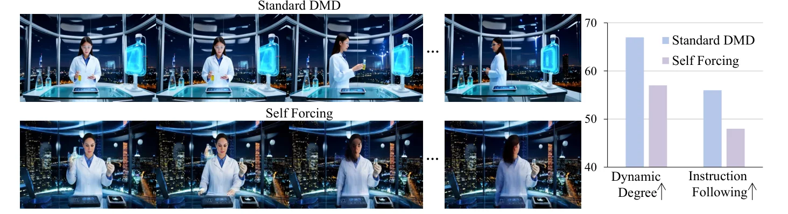
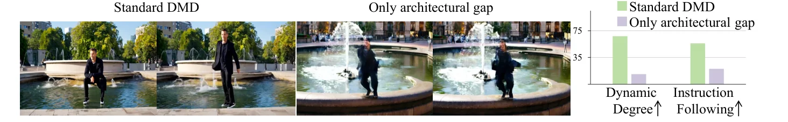
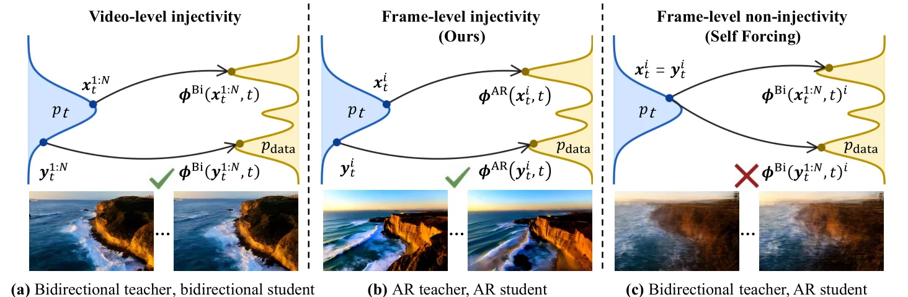
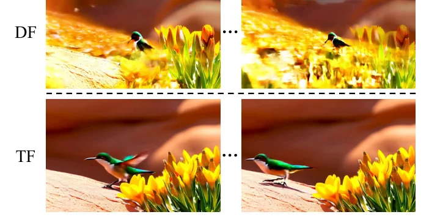
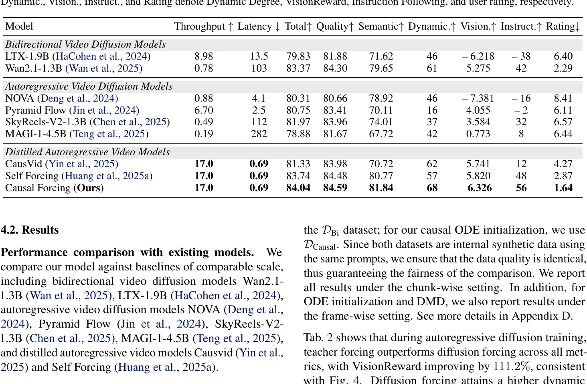
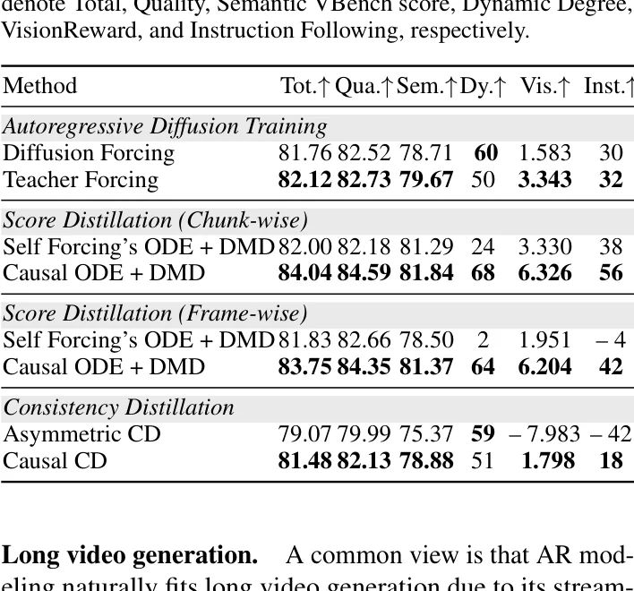
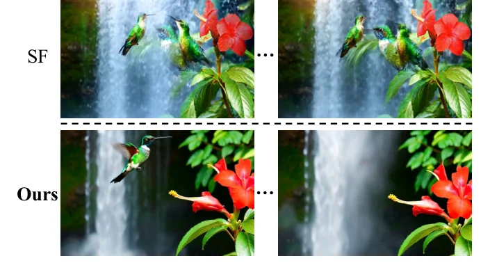
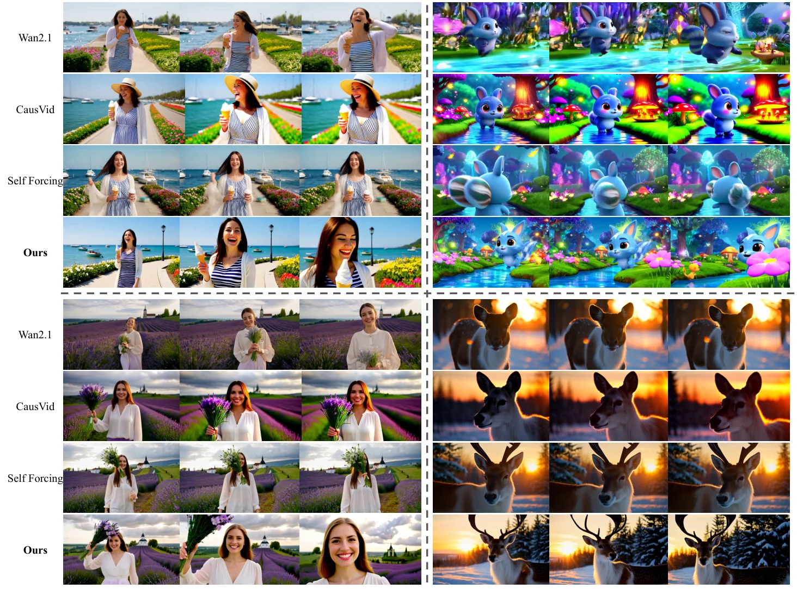

架构鸿沟：AR 蒸馏的根本挑战
实时交互式视频生成的核心需求是：模型必须以自回归（Autoregressive, AR）方式逐帧生成，使用户能够在生成过程中干预后续帧的内容。然而，当前最强大的视频扩散模型（如 Wan2.1）都是双向（Bidirectional）架构——它们一次性处理所有帧，每帧都能通过全注意力（Full Attention）"看到"未来帧。这种架构无法实现流式生成和实时交互。
现有方法（CausVid、Self Forcing）的解决思路是非对称蒸馏：将预训练的双向模型蒸馏为少步自回归学生模型。这一过程面临两层挑战：
采样步数鸿沟
将多步扩散采样（50+步）压缩到少步（4步），这是标准步蒸馏的通用挑战
架构鸿沟 （本文核心关注）
将双向注意力（可访问未来帧）转换为因果注意力（仅依赖过去帧），这是 AR 蒸馏独有的根本挑战

关键发现：DMD 无法弥补架构鸿沟
论文通过一个精巧的对照实验揭示了问题的严重性。作者先用标准 DMD 蒸馏一个少步双向模型——这消除了采样步数鸿沟，仅保留了架构鸿沟。然后用这个模型初始化 AR 学生模型进行 DMD 训练。结果令人震惊：

架构鸿沟的本质是信息不对称：双向模型在训练时可以访问未来帧的信息来辅助当前帧的去噪，而因果模型在推理时被严格限制为只能看过去。这种不对称不是简单的"少了一些信息"，而是改变了去噪映射的数学性质——从视频级别的唯一映射退化为帧级别的多值映射。DMD 的分布匹配机制只能优化学生分布与数据分布的 KL 散度，但无法修复初始化阶段已经坍塌的映射函数。
双向注意力 vs 因果注意力
下图直观展示了两种注意力模式的根本差异：
SVG 可视化：双向注意力中所有帧互相可见（左），因果注意力中每帧仅条件于过去帧（右）
论文的核心论点是：架构鸿沟的解决时机至关重要。DMD 阶段通过分布匹配来优化学生模型，但它本质上是在已有初始化的基础上进行微调。如果初始化阶段已经因为架构鸿沟导致了映射坍塌（从确定性映射退化为条件期望），DMD 无法从这个坍塌状态中恢复。因此，架构鸿沟必须在 ODE 初始化阶段就被正确处理——这正是 Causal Forcing 的切入点。
帧级注入性：ODE 蒸馏的必要条件
本章是论文的理论核心。Causal Forcing 的关键贡献不在于提出了一个新的训练技巧，而在于从数学上证明了现有方法的理论缺陷，并给出了正确的解决方案所需满足的必要条件。
2.1 ODE 蒸馏与注入性
ODE 蒸馏的核心思想是：从教师模型的 PF-ODE 轨迹上采样配对数据 $(x_t, x_0)$，训练学生模型 $G_\theta$ 直接回归干净样本 $x_0$。这一过程要求配对数据满足注入性（Injectivity）——即每个噪声样本 $x_t$ 必须唯一对应一个干净样本 $x_0$。
在标准 ODE 蒸馏中（双向教师 → 双向学生），注入性自然成立：PF-ODE 的解是唯一的，因此对于任意噪声视频 $x_t^{1:N}$，存在唯一的干净视频 $x_0^{1:N}$。学生模型学习的就是这个唯一映射 $\phi^{\text{Bi}}: (x_t^{1:N}, t) \mapsto x_0^{1:N}$。
2.2 帧级注入性的定义
然而，当蒸馏目标是自回归学生模型时，情况发生了根本变化。AR 模型逐帧生成，因此注入性要求从视频级别转移到帧级别：
直观理解：对于同一个噪声帧 $x_t^i$，无论它出现在哪个视频中（即无论其他帧 $x_t^{j \neq i}$ 是什么），AR 教师的 PF-ODE 都必须映射到同一个干净帧 $x_0^i$。这意味着第 $i$ 帧的去噪结果不能依赖于未来帧。
2.3 Self Forcing 为何违反帧级注入性
Self Forcing 使用双向教师模型生成 ODE 配对数据。双向模型的去噪过程利用了所有帧的信息，包括未来帧。因此，即使第 $i$ 个噪声帧 $x_t^i$ 相同，不同的未来帧 $x_t^{\gt i}$ 会导致不同的干净帧 $x_0^i$。
双向扩散模型通过全注意力去噪第 $i$ 帧时，使用了所有帧的信息（包括未来帧 $x_t^{\gt i}$）。因此，即使 $x_t^i$ 固定，不同的 $x_t^{\gt i}$ 仍然可以产生不同的 $x_0^i$。关键在于：$\phi^{\text{Bi}}(x_t^{1:N}, t)_i$ 作为 $x_t^{\text{other}}$ 的函数不是几乎处处常数的（因为 DiT 的注意力映射确实依赖于所有 token）。这意味着同一噪声帧可以对应多个不同的干净帧，违反了帧级注入性。
2.4 条件期望坍塌
当帧级注入性被违反时，MSE 回归的最优解不再是教师模型的真实 flow map，而是退化为条件期望：
条件期望的本质是对所有可能的干净帧取平均，这直接导致生成结果变得模糊。论文通过 L2 正交投影恒等式严格证明了这一点：
由 Lemma 3.2 知 $\mathbb{P}(\text{Var}(Y \mid U, t) \gt 0) \gt 0$，因此 $\mathbb{E}\|\hat{Y}\|^2 \lt \mathbb{E}\|Y\|^2$。如果 $\hat{Y}$ 和 $Y$ 同分布，则它们的 L2 范数期望应相等，矛盾。因此条件期望 $\hat{Y}$ 不服从数据分布。

2.5 注入性概念可视化
SVG 可视化：帧级注入性（左）保证噪声到干净帧的一对一映射；帧级非注入性（右）导致一对多映射，MSE 回归退化为条件期望
这个理论结果的深刻之处在于揭示了 MSE 回归与注入性之间的内在联系。MSE 损失 $\mathbb{E}[\|G_\theta(x_t, t) - x_0\|^2]$ 的最优解始终是条件期望 $\mathbb{E}[x_0 | x_t, t]$。只有当配对数据满足注入性时，条件期望才等于确定性的 flow map $\phi(x_t, t)$，从而恢复教师模型的真实映射。一旦注入性被违反，条件期望就变成了对多个可能目标的平均，导致模糊。这不是工程实现的缺陷，而是数学原理的必然结果。
Causal Forcing 三阶段方法
基于第二章的理论分析，Causal Forcing 提出了一个清晰的三阶段流水线，每一步都有明确的理论依据和工程目标。
整体架构
SVG 可视化：Causal Forcing 三阶段流水线
Stage 1：自回归扩散训练（Teacher Forcing）
第一阶段从预训练的双向模型（Wan2.1-T2V-1.3B）出发，训练一个多步自回归扩散模型作为后续 ODE 蒸馏的教师。训练采用 Teacher Forcing 策略——每个帧的去噪条件于干净的真实历史帧 $x_0^{\lt i}$，而非噪声历史帧。
这一阶段的关键发现将在第四章详细讨论：Teacher Forcing 优于 Diffusion Forcing，这与社区的普遍认知相反。
Stage 2：因果 ODE 蒸馏
第二阶段是论文的核心创新。使用 Stage 1 训练的 AR 模型作为教师，采样其 PF-ODE 轨迹来构建配对数据，然后训练少步 AR 学生模型：
注意与 Self Forcing 的 ODE 目标（Eq 3）的关键区别：
Self Forcing (Eq 3)
条件：$x_t^{\lt i}$（噪声历史帧）
教师：双向模型
配对数据来自双向 PF-ODE
→ 违反帧级注入性
Causal Forcing (Eq 8)
条件：$x_{\text{gt}}^{\lt i}$（干净历史帧）
教师：AR 模型
配对数据来自 AR PF-ODE
→ 满足帧级注入性
AR 模型逐帧生成时，第 $i$ 帧的去噪过程仅依赖于历史帧 $x_0^{\lt i}$ 和当前噪声 $x_t^i$，不涉及未来帧。因此，给定相同的 $x_t^i$ 和 $x_{\text{gt}}^{\lt i}$，AR 教师的 PF-ODE 总是映射到同一个 $x_0^i$——帧级注入性天然成立。这使得学生模型能够准确学习到确定性的 flow map，而非退化的条件期望。
Stage 2 代码实现：ODE 轨迹采样
以下代码展示了如何从 AR 教师模型采样 PF-ODE 轨迹来构建因果 ODE 配对数据：
def main():
parser = argparse.ArgumentParser()
parser.add_argument("--output_folder", type=str)
parser.add_argument("--rawdata_path", type=str)
parser.add_argument("--generator_ckpt", type=str)
parser.add_argument("--guidance_scale", type=float, default=6.0)
args = parser.parse_args()
launch_distributed_job()
config = OmegaConf.load(args.config)
pipeline = CausalDiffusionInferencePipeline(config, device=device)
pipeline.generator.load_state_dict(
torch.load(args.generator_ckpt, map_location=device)
)
dataset = load_dataset(args.rawdata_path)
for prompt_index, batch in enumerate(dataset):
text_prompts = batch["prompts"]
clean_latent = batch["clean_latent"].to(device)
# 从 AR 教师采样 PF-ODE 轨迹
# 关键：条件于干净历史帧 x_gt^{<i}
noisy_input = []
for t in config.denoising_step_list:
# AR 教师在干净前缀条件下生成
noise = torch.randn_like(clean_latent[:, :chunk_size])
noisy_latent = pipeline.ar_teacher_denoise(
noise=noise,
text_prompts=text_prompts,
initial_latent=clean_latent, # 干净历史帧
timestep=t,
)
noisy_input.append(noisy_latent)
# 保存配对数据 (x_t^i, x_0^i)
noisy_inputs = torch.stack(noisy_input, dim=1)
noisy_inputs = noisy_inputs[:, [0, 12, 24, 36, -2, -1]] # 采样时间步
torch.save(
{prompt: noisy_inputs.cpu().detach()},
os.path.join(args.output_folder, f"{prompt_index:05d}.pt")
)Stage 3：非对称 DMD
第三阶段沿用 Self Forcing 的非对称 DMD 流程。学生模型在自身的自展开（self-rollout）生成上进行分布匹配，使用 Wan2.1-14B 作为 $s_{\text{real}}$（真实分布的 score 估计器），Wan2.1-1.3B 作为 $s_{\text{fake}}$（学生分布的 score 估计器）。
DMD 的核心在于通过两个 score 模型的差值来估计 KL 散度的梯度方向，驱动学生分布向数据分布靠拢。关键区别在于初始化：Causal Forcing 使用因果 ODE 蒸馏的模型作为初始化（已正确学习 flow map），而 Self Forcing 使用违反帧级注入性的 ODE 初始化（已退化为条件期望）。
替代方案分析：为什么不直接用 AR 扩散模型初始化 DMD？
论文附录 C.2 探讨了一个自然的替代方案：跳过 Stage 2，直接用 Stage 1 的多步 AR 扩散模型初始化 DMD。实验表明这比 Self Forcing 有显著提升，但仍不及完整的 Causal Forcing：
| 初始化方式 | Total↑ | Dyn.↑ | Vision.↑ | Inst.↑ |
|---|---|---|---|---|
| Self Forcing ODE + DMD | 82.00 | 24 | 3.330 | 38 |
| AR Diffusion + DMD | 84.02 | 66 | 5.863 | 48 |
| Causal ODE + DMD | 84.04 | 68 | 6.326 | 56 |
原因在于：多步 AR 模型在少步采样下存在条件上下文质量退化问题——第 $i$ 帧条件于前面帧的少步生成结果（质量较差），而训练时条件于干净前缀。这种质量退化在自回归生成中逐帧累积，导致 chunk 间的突变。因果 ODE 蒸馏通过将多步模型压缩为少步模型，在保持因果一致性的同时消除了这一 mismatch。
Teacher Forcing vs Diffusion Forcing
Causal Forcing 的 Stage 1 需要训练一个 AR 扩散模型作为教师。社区中存在两种主要的训练范式：Teacher Forcing (TF) 和 Diffusion Forcing (DF)。论文得出了一个反直觉的结论：TF 优于 DF。
两种训练范式
SVG 可视化：TF 训练条件与推理一致（绿），DF 训练条件与推理不一致（红）
理论分析：DF 的分布不匹配
论文从理论上证明了 DF 在 AR 扩散训练中的劣性：
这个命题表明：用 DF 训练的模型在给定干净前缀 $y$ 时，生成的分布 $p_{\text{DF}}(x_0^i | y)$ 不等于真实数据分布 $p_{\text{data}}(x_0^i | y)$。KL 散度严格大于零，意味着存在不可忽略的分布偏移。
证明直觉：Markov 链与信息损失
证明的核心思路是利用 Markov 链的性质。在 DF 训练中，噪声前缀 $Z = x_t^{\lt i}$ 是从干净前缀 $Y = x_0^{\lt i}$ 经前向扩散得到的。因此存在 Markov 链 $X \to Y \to Z$（其中 $X = x_0^i$）。DF 训练的模型学到的是 $p(X|Z)$，但推理时需要的是 $p(X|Y)$。
关键假设是 (A2)：同一视频中的不同帧不是独立的，即 $p_{\text{data}}(X|Y)$ 不是几乎处处常数。在这个假设下，通过反证法和条件期望算子的性质，可以证明 $p(X|Z=y) \neq p(X|Y=y)$ 对正测度集成立。
论文附录 C.1 精确界定了 DF 的适用范围。DF 最初是为双向扩散模型的长视频续写设计的——推理时将干净视频的尾部帧与噪声拼接，这与训练设置一致，因此不存在 train-inference gap。问题仅出现在将 DF 用于 AR 扩散训练时：AR 推理条件于干净前缀，但 DF 训练条件于噪声前缀。CausVid 和 LiveAvatar 等工作采用了这种有缺陷的设置。Causal Forcing 的贡献在于从理论上明确了这一区分。
实验验证

| 方法 | Total↑ | Quality↑ | Semantic↑ | Dyn.↑ | Vision.↑ | Inst.↑ |
|---|---|---|---|---|---|---|
| Diffusion Forcing | 81.76 | 82.52 | 78.71 | 60 | 1.583 | 30 |
| Teacher Forcing | 82.12 | 82.73 | 79.67 | 50 | 3.343 | 32 |
值得注意的是，DF 获得了更高的 Dynamic Degree（60 vs 50），但这并非真正的动态性，而是视频坍塌导致的运动指标病态膨胀——坍塌的视频会产生不自然的高频运动，被 Dynamic Degree 指标误判为"动态"。VisionReward 的巨大差距（1.583 vs 3.343，提升 111.2%）才是真实质量的体现。
反幻觉验证：论文还对比了其他 AR 训练策略（PFVG、BAgger、Resampling Forcing），它们在 5s 视频设置下均未显著优于 TF。这些方法主要针对长视频训练设计，在短视频场景下优势不明显。论文未过度声称 TF 在所有场景下最优，而是精确限定了适用范围。
因果一致性蒸馏扩展
Causal Forcing 的理论洞察不仅适用于 ODE 蒸馏，还自然扩展到一致性蒸馏（Consistency Distillation, CD）。论文提出了首个因果一致性蒸馏框架，并证明它优于使用双向教师的不对称 CD。
5.1 从 ODE 蒸馏到一致性蒸馏
ODE 蒸馏可以看作 CD 的简化形式。标准 CD 通过学习一个 flow map $G_\theta: (x_t, t) \mapsto x_0$，在相邻时间步之间保持一致性：
其中 $\hat{x}_{t-\Delta t}^i$ 通过 AR 教师模型从 $x_t^i$ 求解一步 ODE 得到，$\theta^-$ 是 $\theta$ 的运行平均（stop-gradient），$d(\cdot, \cdot)$ 是所选范数下的距离。
5.2 因果 CD vs 不对称 CD
SVG 可视化：不对称 CD（左）因帧级非注入性导致退化，因果 CD（右）正确学习 flow map
5.3 边界条件的简化设计
CD 要求边界条件 $G_\theta(x_i, x_{\text{gt}}^{\lt i}, 0) \equiv x_i$，通常通过包装网络 $F_\theta$ 实现：
但论文发现，由于使用 flow matching（v-prediction 参数化），$x_0$-prediction 形式天然满足边界条件：
当 $t = 0$ 时，$G_\theta(x_i, \cdot, 0) = x_i - 0 \cdot v_\theta = x_i$，自然满足边界条件。这种简化设计避免了额外的网络结构，但论文也承认这可能不是最优的，留有改进空间。
Causal Forcing 的理论贡献超越了具体的蒸馏方法。其核心洞察——AR 学生需要 AR 教师来保证帧级注入性——同时适用于 ODE 蒸馏和 CD。这是因为两者的数学基础都依赖于 PF-ODE 的 flow map 具有唯一性。只要蒸馏目标是 AR 学生，无论使用 ODE 回归还是 CD 一致性，都必须使用 AR 教师来生成配对数据。这一统一视角为未来的蒸馏方法设计提供了理论指导。
5.4 实验结果
| 方法 | Total↑ | Quality↑ | Semantic↑ | Dyn.↑ | Vision.↑ | Inst.↑ |
|---|---|---|---|---|---|---|
| 不对称 CD | 79.07 | 79.99 | 75.37 | 59 | -7.983 | -42 |
| 因果 CD | 81.48 | 82.13 | 78.88 | 51 | 1.798 | 18 |
因果 CD 在 VisionReward 上提升了 9.781 分，Instruction Following 提升了 60 分。但论文坦诚指出，当前的因果 CD 仍不及 score distillation（DMD），因为它直接采用了 vanilla LCM 设置，是一个"初步实现"。这一诚实的评估避免了过度声称。
实验结果与分析
6.1 主要定量结果

在相同训练预算下（同为 3K 步 ODE 初始化），Causal Forcing 全面超越 Self Forcing。更值得注意的是，Causal Forcing 在 Dynamic Degree（68 vs 57）、VisionReward（6.326 vs 5.820）和 Instruction Following（56 vs 48）上均取得最优，同时保持了相同的推理延迟（0.69s）和吞吐量（17.0 FPS）。
6.2 性能雷达图
SVG 可视化：性能雷达图（紫色=Self Forcing，绿色=Causal Forcing），Causal Forcing 在动态度和指令遵循上优势最明显
6.3 消融实验

消融实验的几个关键发现：
(1) TF vs DF（AR 训练阶段）：TF 在 VisionReward 上比 DF 提升 111.2%。DF 虽然获得更高的 Dynamic Degree（60 vs 50），但这源于视频坍塌导致的病态运动。
(2) 因果 ODE vs Self Forcing ODE（chunk-wise）：因果 ODE 初始化在 DMD 后全面优于 Self Forcing 的 ODE 初始化——VisionReward 提升 90.0%，Dynamic Degree 提升 183.3%，Instruction Following 提升 47.4%。
(3) 帧级 vs chunk-wise：在 frame-wise 设置下，差距更为悬殊——Dynamic Degree 提升 3100%（从 2 到 64），VisionReward 提升 218.0%。这表明帧级别设置下架构鸿沟更加严重，Causal Forcing 的优势也更突出。
Chunk-wise 设置（每个 chunk 包含 3 个 latent frame）比 frame-wise 设置表现更好，原因在于chunk 内部的帧可以互相参考，部分缓解了因果注意力的信息限制。在 frame-wise 设置下，每帧完全独立生成，架构鸿沟的影响被放大。Causal Forcing 在两种设置下都显著优于 Self Forcing，但 frame-wise 的提升幅度更大（3100% vs 183.3%），说明帧级注入性在更严格的因果约束下更加关键。
6.4 定性对比


6.5 初始化消融
论文附录 C.3 还验证了一个关键问题：性能差异是来自配对数据构建方式还是学生初始化？作者使用 AR 教师生成的配对数据 $D_{\text{Causal}}$，但用双向模型初始化学生。结果显示性能与 AR 初始化相当，仍远优于 Self Forcing。
这个消融实验精确定位了 Causal Forcing 优势的来源：不是学生模型的初始化权重，而是 ODE 配对数据的构建方式。只要配对数据来自 AR 教师（满足帧级注入性），即使学生从双向模型初始化也能获得优秀性能。反之，即使学生从 AR 模型初始化，如果配对数据来自双向教师（违反帧级注入性），性能仍然不佳。这验证了论文核心论点——帧级注入性是 ODE 蒸馏成功的必要条件。
代码实现深度剖析
本章深入分析 Causal Forcing 的官方代码实现（GitHub 仓库），揭示论文方法与工程实现之间的对应关系。
7.1 系统架构总览
SVG 可视化：代码架构层次与数据流
7.2 ODE 回归训练器
以下代码展示了 Stage 2 的核心训练逻辑，对应论文 Eq 8 的因果 ODE 蒸馏目标：
class Trainer:
def __init__(self, config):
self.config = config
self.step = 0
self.device = config.device
self.dtype = torch.bfloat16 if config.mixed_precision else torch.float32
# 初始化 ODE 回归模型
self.model = ODERegression(config, device=self.device)
# 优化器配置：仅训练 generator 参数
self.generator_optimizer = torch.optim.AdamW(
[param for param in self.model.generator.parameters()
if param.requires_grad],
lr=config.lr,
betas=(config.beta1, config.beta2),
weight_decay=config.weight_decay
)
self.max_grad_norm = config.max_grad_norm
def train_one_step(self, loss_scale=1.0):
self.model.eval()
# 从预采样的 ODE 轨迹中加载配对数据
batch = next(self.dataloader)
text_prompts = batch["prompts"]
# ode_latent 包含不同时间步的噪声中间态 x_t^i
ode_latent = batch["ode_latent"].to(
device=self.device, dtype=self.dtype
)
# 编码文本条件
with torch.no_grad():
conditional_dict = self.model.text_encoder(
text_prompts=text_prompts
)
# 计算 MSE 回归损失 (对应 Eq 8)
# generator_loss = ||G_θ(x_t^i, x_gt^{<i}, t) - x_0^i||^2
generator_loss, log_dict = self.model.generator_loss(
ode_latent=ode_latent,
conditional_dict=conditional_dict
)
# 反向传播 + 梯度裁剪
self.generator_optimizer.zero_grad()
(generator_loss * loss_scale).backward()
generator_grad_norm = self.model.generator.clip_grad_norm_(
self.max_grad_norm
)
self.generator_optimizer.step()
return log_dict关键实现细节：ode_latent 是预采样的 PF-ODE 轨迹（来自 AR 教师），包含不同时间步的噪声中间态。训练时直接回归干净目标，无需在线采样教师模型——这是 ODE 蒸馏（回归式）区别于 CD（一致性式）的核心特征。
7.3 DMD 训练器
Stage 3 的 DMD 训练采用 generator-critic 交替训练策略：
class Trainer:
def __init__(self, config):
self.config = config
self.step = 0
# 根据 distribution_loss 类型选择模型
if config.distribution_loss == "dmd":
self.model = DMD(config, device=self.device)
# Generator 优化器（学生模型）
self.generator_optimizer = torch.optim.AdamW(
[param for param in self.model.generator.parameters()
if param.requires_grad],
lr=config.lr,
betas=(config.beta1, config.beta2),
weight_decay=config.weight_decay
)
# Critic 优化器（fake score 模型）
self.critic_optimizer = torch.optim.AdamW(
[param for param in self.model.fake_score.parameters()
if param.requires_grad],
lr=config.lr_critic,
betas=(config.beta1_critic, config.beta2_critic),
weight_decay=config.weight_decay
)
def fwdbwd_one_step(self, batch, train_generator, clean_latent=None):
# ... (预处理条件字典)
if train_generator:
# Generator 训练步：最小化 KL 散度
# 对应 Eq 2 中的梯度方向
generator_loss, generator_log_dict = self.model.generator_loss(
image_or_video_shape=image_or_video_shape,
conditional_dict=conditional_dict,
unconditional_dict=unconditional_dict,
clean_latent=clean_latent,
initial_latent=image_latent if self.config.i2v else None
)
generator_loss.backward()
return generator_log_dict
else:
# Critic 训练步：训练 fake score 模型
# 使 s_fake 更好地估计学生分布的 score
critic_loss, critic_log_dict = self.model.critic_loss(
image_or_video_shape=image_or_video_shape,
conditional_dict=conditional_dict,
unconditional_dict=unconditional_dict,
clean_latent=clean_latent
)
critic_loss.backward()
return critic_log_dictDMD 训练的关键在于交替优化：generator 步通过 $s_{\text{real}} - s_{\text{fake}}$ 的差值估计 KL 梯度方向来更新学生模型；critic 步训练 $s_{\text{fake}}$ 以更准确地估计当前学生分布的 score。这种对抗式训练确保分布匹配的准确性。
7.4 推理流程
def main():
# ... (参数解析和初始化)
# 根据配置选择推理管线
# CausalInferencePipeline: 支持自定义去噪步列表（4步）
# CausalDiffusionInferencePipeline: 标准扩散推理
pipeline = CausalInferencePipeline(config, device=device) \
if hasattr(config, 'denoising_step_list') \
else CausalDiffusionInferencePipeline(config, device=device)
# ... (加载模型权重)
# 因果推理：逐 chunk 生成，支持 KV 缓存
video, latents = pipeline.inference(
noise=sampled_noise,
text_prompts=prompts,
return_latents=True,
initial_latent=initial_latent, # I2V 时的初始帧
report_timing=sample_report_timing,
)
# 保存视频（16 FPS）
write_video(output_path, video[0], fps=16)推理使用 4 步采样，时间步为 $[1.0, 0.9375, 0.8333, 0.625]$。CausalInferencePipeline 支持时序 KV 缓存——已生成帧的 KV 对在后续 chunk 生成时被复用，避免重复计算，这是实现实时推理（17 FPS）的关键工程优化。
7.5 模型初始化
class BaseModel(nn.Module):
def __init__(self, args, device):
super().__init__()
self._initialize_models(args, device)
self.device = device
self.args = args
self.dtype = torch.bfloat16 if args.mixed_precision else torch.float32
def _initialize_models(self, args, device):
self.real_model_name = getattr(args, "real_name", "Wan2.1-T2V-1.3B")
self.fake_model_name = getattr(args, "fake_name", "Wan2.1-T2V-1.3B")
# 关键：iscausal 标志控制注意力类型
# generator=True（因果），real_score/fake_score=False（双向）
self.iscausal = getattr(args, "causal", True)
# 学生模型：因果注意力
self.generator = WanDiffusionWrapper(
**getattr(args, "model_kwargs", {}),
is_causal=self.iscausal
)
# 真实分布 score 估计器：双向注意力
self.real_score = WanDiffusionWrapper(
model_name=self.real_model_name,
is_causal=False
)
# 学生分布 score 估计器：双向注意力
self.fake_score = WanDiffusionWrapper(
model_name=self.fake_model_name,
is_causal=False
)
# 文本编码器和 VAE
self.text_encoder = WanTextEncoder()
self.vae = WanVAEWrapper()
self.scheduler = self.generator.get_scheduler()关键设计：generator 使用因果注意力（is_causal=True），而 real_score 和 fake_score 使用双向注意力（is_causal=False）。这体现了非对称 DMD 的设计哲学——学生模型需要因果约束以支持流式生成，但 score 估计器只需要评估单帧质量，不需要因果约束。real_score 使用更大的 Wan2.1-14B 模型以提供更准确的真实分布估计。
DMD 中 $s_{\text{real}}$ 和 $s_{\text{fake}}$ 的作用是估计给定噪声样本 $\tilde{x}_t$ 的 score 函数——即数据分布在该点的梯度。这个估计本质上是单帧级别的操作，不涉及帧间因果关系。使用双向注意力的 score 估计器可以更准确地建模帧间依赖（因为训练时有完整视频），从而提供更精确的分布匹配信号。这种"学生因果、评估器双向"的非对称设计是 Causal Forcing（以及 Self Forcing）高效蒸馏的关键工程选择。
自主科研问题
基于对 Causal Forcing 的深入分析，我们提出以下五个未解问题，每个都附有理论分析和可能的研究方向。
帧级注入性是否可以松弛为"近似注入性"？
Causal Forcing 要求严格满足帧级注入性（Definition 3.1），即相同 $x_t^i$ 必须映射到完全相同的 $x_0^i$。但实际中，双向模型的 PF-ODE 对未来帧的依赖程度可能因帧内容而异——静态背景帧的依赖较弱，动态前景帧的依赖较强。能否定义一个"近似注入性"度量（如条件方差的上界），并在该度量满足阈值时允许使用双向教师？这将扩大可选教师模型的范围。理论上的挑战在于：即使条件方差很小，MSE 回归仍会产生偏差，需要量化这种偏差与生成质量之间的关系。
Causal CD 能否替代 Causal ODE 作为 DMD 的初始化？
论文提到因果 CD 可以作为 ODE 蒸馏的替代品用于 DMD 初始化，但留作未来工作。当前因果 CD 使用 vanilla LCM，性能不及 score distillation。如果采用更先进的 CD 方法（如 sCM、Mean Flows），因果 CD 是否能达到甚至超越因果 ODE？这需要解决两个挑战：(1) CD 的一致性损失在因果设置下的稳定性；(2) CD 的边界条件在 v-prediction 参数化下的最优设计（论文的 Eq 31 是简化版，可能非最优）。
多帧 chunk 级别的注入性条件如何形式化？
论文的 Lemma B.1 将帧级注入性推广到 chunk 级别（将 $k$ 个连续帧视为一个单元），但实际实现中每个 chunk 包含 3 个 latent frame。问题是：chunk 级别的注入性条件是否比帧级别更宽松？如果 chunk 内部使用双向注意力（如当前实现），但 chunk 间使用因果注意力，那么注入性要求是针对 chunk 整体还是 chunk 内每个帧？这个形式化对于设计混合注意力模式（如 sparse attention）的 AR 模型至关重要。
架构鸿沟是否存在于其他模态的 AR 蒸馏中？
Causal Forcing 的理论框架是否适用于音频生成、3D 点云生成或文本到 3D 的 AR 蒸馏？这些领域同样存在双向模型到 AR 模型的蒸馏需求。关键在于：其他模态的"帧"定义不同（音频的帧是短时间窗，3D 的帧是空间区块），其 PF-ODE 的注入性性质可能不同。特别是 3D 生成中，空间上的非因果性（一个区域的去噪可以参考其他区域）与时间上的因果性（只能参考过去）形成混合约束，帧级注入性的理论需要推广。
能否设计无需 AR 教师的帧级注入性保证？
Causal Forcing 需要先训练一个 AR 扩散模型作为教师，这增加了训练成本（额外 2K 步）。能否设计一种方法，直接从双向模型构建满足帧级注入性的配对数据？一个可能的方向是：条件化双向模型的 PF-ODE 采样——固定未来帧为某个参考值（如零或均值），使得对第 $i$ 帧的去噪不再依赖于未来帧的变化。但这会引入分布偏移（因为固定未来帧不服从数据分布）。另一个方向是使用变分推断来 marginalize 掉未来帧的影响，但这可能导致高方差估计。这个问题的解决将简化 Causal Forcing 的训练流程。
总结
Causal Forcing 的核心贡献不在于提出一个新的训练技巧，而在于从理论上诊断了现有 AR 扩散蒸馏方法的根本缺陷，并给出了基于帧级注入性的正确解决方案。论文的三个关键洞察形成了完整的逻辑链：
(1) 诊断：Self Forcing 的 ODE 蒸馏使用双向教师生成配对数据，违反了帧级注入性，导致 MSE 回归退化为条件期望，产生模糊视频。
(2) 治疗：使用 AR 教师生成 ODE 配对数据，天然满足帧级注入性，使学生能够准确学习 flow map。
(3) 预防：Teacher Forcing 比 Diffusion Forcing 更适合 AR 扩散训练，因为它消除了训练-推理分布不匹配。
这三个洞察构成了一个理论驱动的方法设计范式——先理解为什么现有方法失败（数学分析），再设计正确的解决方案（因果 ODE 蒸馏），最后选择最优的训练策略（Teacher Forcing）。这种范式对未来的蒸馏方法设计具有指导意义。